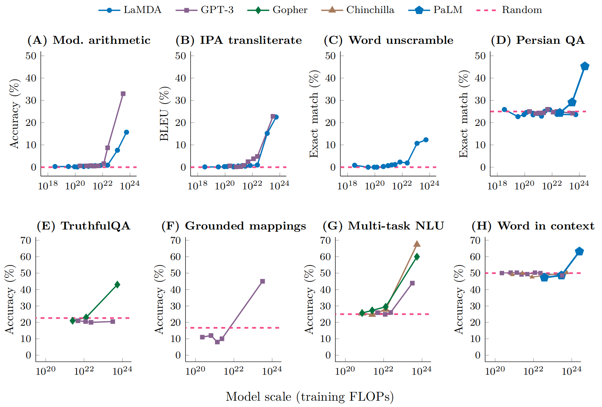
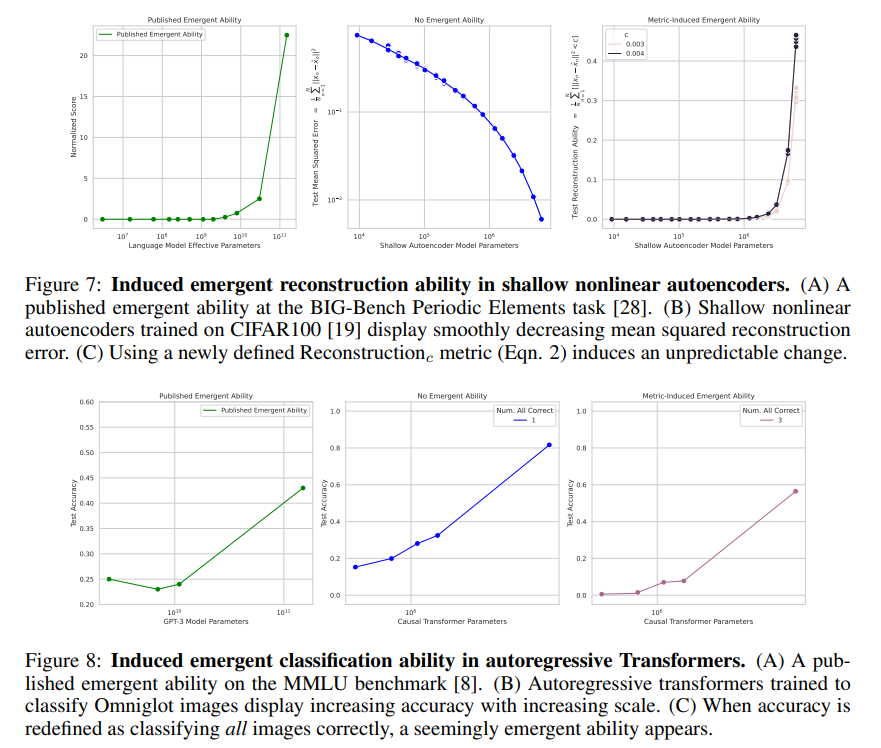

- Paper: Are Emergent Abilities of Large Language Models a Mirage? (Schaeffer, Miranda, and Koyejo 2024)
- Presenter: Brian
- Attendees: Hongsup
Why this paper?
Given the inherent open-ended nature of Large Language Model (LLM) responses and their ability to respond to queries relating to diverse topics, proper evaluation of performance is no simple task. This paper engages deeply with the question of how we are evaluating LLMs and what implications that has for understanding performance improvements as these models grow larger. Given the incredible increase in hype over the past several years, one might think that the models of today were a stark shift up from past iterations, but the improvement might be a smoother growth than previously thought.
This article was selected as one of the outstanding main track papers at NeurIPS 2023. It also generated some attention in the press, with an article by Vice.
Summary
For a 15-minute video summary of the paper by one of the authors, check out his presentation at NeurIPS.
Emergence
The title of this paper can be seen as a response to Wei et al. (2022). This previous work defined emergent abilities as “abilities that are not present in smaller-scale models but are present in large-scale models”. The authors of that work showed that there were many downstream tasks where LLMs appeared to show emergent behavior, as shown in the below figure.

From these previous definitions, Schaeffer, Miranda, and Koyejo (2024) distilled two main properties of emergence:
- Sharpness: behaviors appear suddenly
- Unpredictability: it seems impossible to forecast at what model size such behaviors will appear
However, they argue that emergent behavior is more an artifact of the performance metric and evaluation procedure as opposed to an inherent quality of the models themselves.
An Alternative Explanation
A common observation in deep learning is that models appear to obey what are called ‘neural scaling laws’, where the test loss exhibits a power law relationship with the size of the model. The notion of size can vary from amount of compute to training dataset size to number of parameters, but empirically similar trends have been observed. For the most part, this paper uses the number of parameters.
Accordingly, when visualized on a log-log plot, we should see a linear decreasing trend between number of parameters and the loss. Under some simple assumptions, this means that the probability of a correct token will increase linearly with the log of the number of parameters. These two relationships are visualized in Figure 1 A and B.

Thus, by analyzing the relationship between a scoring metric and the per-token probability of success, one can see how the scores would evolve as the model size grows. As seen in Figure 1 C and D, nonlinear or discontinuous metrics can give the appearance of ‘emergence’, even though the model improvement with size is growing steadily and predictably. If instead models are scored by continuous or linear metrics (E and F) then much more smooth growth is observed.
As a more concrete example, imagine the task is \(L\)-digit arithmetic. If we score the LLM output using accuracy (output is 1 if exact match, otherwise 0), then all \(L\) tokens must be correct, and thus the score is nonlinear with respect to the per-token probability. Meanwhile, a score like token edit distance would be linear in the probability.
The authors argue this discrepancy in metric can almost fully explain emergence. They also point to two other possible factors: insufficient resolution to measure model performance for smaller model scales (due to small test sizes) and insufficient sampling for larger model scales.
Validating the Explanation
To showcase the viability of this explanation, the authors embark on three different investigations, which we describe briefly.
- Utilizing Instruct-GPT, the authors show that emergence evaporates upon switching to linear/continuous metrics or increasing test set size to more accurately measure performance.
- By exploring results from a large benchmark that tests a variety of model families using a variety of metrics and across different tasks, the authors show that emergence is generally limited to only a few metrics as opposed to task-model family pairs. In this analysis, they utilize the benchmark known as BIG-Bench (Srivastava et al. 2022) and adopt a metric from that paper called “breakthroughness”, although rename it as an emergence score. It is worthwhile to note that the seed idea of this paper–breakthroughness/emergence being heavily related to which metric is used–was briefly discussed in the BIG-Bench paper (Section 3.4.2).
- The authors show that one can use this logic of nonlinear/discontinuous metrics to ‘induce’ emergence in other scenarios, notably vision tasks. This induced behavior is summarized in the figures below.

Our Discussion
We found this paper enjoyable and illuminating. The paper had a relatively simple main message, and argued their point compellingly, although we did have some confusion about the details of certain analyses. In particular, the meta-analysis of claimed emergent ability using BIG-Bench (Section 4) raised several questions. For example, we were not sure how the authors went from a distribution of emergence scores to a cutoff for ‘possible emergent abilities’. The figure for this section seemed to come from two sources; one visualized the purely quantitative emergence scores from BIG-Bench, while the other depicted hand-annotated data from elsewhere. It was not well explained how these were linked. Additionally, accuracy was previously described as an emergent-prone metric, but that metric showed no suggestion of emergence in this analysis. This was not discussed.
As the authors mention in their discussion, this line of work does not rebut the possibility of emergence nor does it really dictate which metrics are best for analyzing a single model. Rather, it simply suggests that if your goal is to model performance across changing model scores, attention should be paid to use metrics which are linear or continuous with the per-token correctness probability.
As a final note, we discussed how ML papers often have much stronger and eye-catching language than many other academic disciplines. In some cases, this can be a good thing to attract attention, but it is also easy to misinterpret and make stronger. For example, the aforementioned Vice article attaches the qualifier ‘scary’ to its headline when mentioning the theorized emergent AI capabilities. This kind of language makes it easy for the conversation to shift away from the core of the article and into more vague notions of ‘sentience’ and AI existential risk. These latter topics are certainly important and interesting, but they are mostly divorced from the actual content of this particular paper.